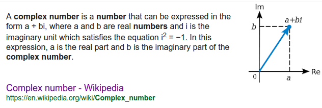
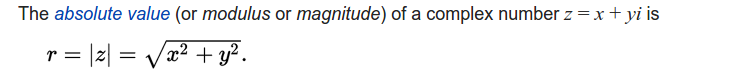
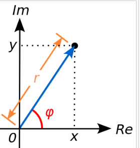
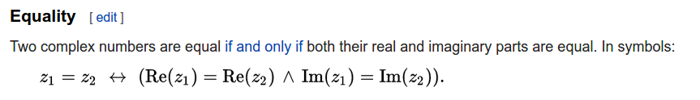
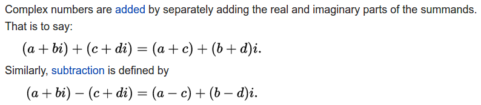
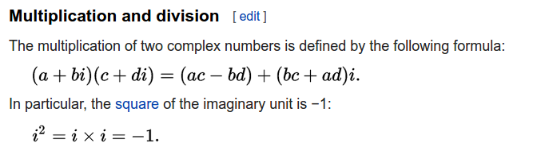

OOP#
Download exercises zip#
What to do#
unzip exercises in a folder, you should get something like this:
oop
complex_number.py
complex_number_test.py
complex_number_sol.py
multiset.py
multiset_test.py
multiset_sol.py
matrix.py
oop.ipynb
jupman.py
sciprog.py
This time you will not write in the notebook, instead you will edit .py files in Visual Studio Code.
Now proceed reading.
1. Abstract Data Types (ADT) Theory#
1.1. Intro#
Theory from the slides:
Object Oriented programming on the the book (In particular, Fraction class, in this course we won’t focus on inheritance)
1.2. Complex number theory#

1.3. Datatypes the old way#
From the definition we see that to identify a complex number we need two float values . One number is for the real part, and another number is for the imaginary part.
How can we represent this in Python? So far, you saw there are many ways to put two numbers together. One way could be to put the numbers in a list of two elements, and implicitly assume the first one is the real and the second the imaginary part:
[1]:
c = [3.0, 5.0]
Or we could use a tuple:
[2]:
c = (3.0, 5.0)
A problem with the previous representations is that a casual observer might not know exactly the meaning of the two numbers. We could be more explicit and store the values into a dictionary, using keys to identify the two parts:
[3]:
c = {'real': 3.0, 'imaginary': 5.0}
[4]:
print(c)
{'real': 3.0, 'imaginary': 5.0}
[5]:
print(c['real'])
3.0
[6]:
print(c['imaginary'])
5.0
Now, writing the whole record {'real': 3.0, 'imaginary': 5.0} each time we want to create a complex number might be annoying and error prone. To help us, we can create a little shortcut function named complex_number that creates and returns the dictionary:
[7]:
def complex_number(real, imaginary):
d = {}
d['real'] = real
d['imaginary'] = imaginary
return d
[8]:
c = complex_number(3.0, 5.0)
[9]:
print(c)
{'real': 3.0, 'imaginary': 5.0}
To do something with our dictionary, we would then define functions, like for example complex_str to show them nicely:
[10]:
def complex_str(cn):
return str(cn['real']) + " + " + str(cn['imaginary']) + "i"
[11]:
c = complex_number(3.0, 5.0)
print(complex_str(c))
3.0 + 5.0i
We could do something more complex, like defining the phase of the complex number which returns a float:
IMPORTANT: In these exercises, we care about programming, not complex numbers theory. There’s no need to break your head over formulas!
[12]:
import math
def phase(cn):
""" Returns a float which is the phase (that is, the vector angle) of the complex number
See definition: https://en.wikipedia.org/wiki/Complex_number#Absolute_value_and_argument
"""
return math.atan2(cn['imaginary'], cn['real'])
[13]:
c = complex_number(3.0, 5.0)
print(phase(c))
1.0303768265243125
We could even define functions that that take the complex number and some other parameter, for example we could define the log of complex numbers, which return another complex number (mathematically it would be infinitely many, but we just pick the first one in the series):
[14]:
import math
def log(cn, base):
""" Returns another complex number which is the logarithm of this complex number
See definition (accomodated for generic base b):
https://en.wikipedia.org/wiki/Complex_number#Natural_logarithm
"""
return {'real':math.log(cn['real']) / math.log(base),
'imaginary' : phase(cn) / math.log(base)}
[15]:
print(log(c,2))
{'real': 1.5849625007211563, 'imaginary': 1.4865195378735334}
You see we got our dictionary representing a complex number. If we want a nicer display we can call on it the complex_str we defined:
[16]:
print(complex_str(log(c,2)))
1.5849625007211563 + 1.4865195378735334i
1.4. Finding the pattern#
So, what have we done so far?
Decided a data format for the complex number, saw that the dictionary is quite convenient
Defined a function to quickly create the dictionary:
def complex_number(real, imaginary):
Defined some function like
phaseandlogto do stuff on the complex number
def phase(cn):
def log(cn, base):
Defined a function
complex_strto express the complex number as a readable string:
def complex_str(cn):
Notice that:
all functions above take a
cncomplex number dictionary as first parameterthe functions
phaseandlogare quite peculiar to complex number, and to know what they do you need to have deep knowledge of what a complex number is.the function
complex_stris more intuitive, because it covers the common need of giving a nice string representation to the data format we just defined. Also, we used the wordstras part of the name to give a hint to the reader that probably the function behaves in a way similar to the Python functionstr().
When we encounter a new datatype in our programs, we often follow the procedure of thinking listed above. Such procedure is so common that software engineering people though convenient to provide a specific programming paradigm to represent it, called Object Oriented programming. We are now going to rewrite the complex number example using such paradigm.
1.5. Object Oriented Programming#
In Object Oriented Programming, we usually:
introduce new datatypes by declaring a class, named for example
ComplexNumberare given a dictionary and define how data is stored in the dictionary (i.e. in fields
realandimaginary)define a way to construct specific instances , like
3 + 2i,5 + 6i(instances are also called objects)define some methods to operate on the instances (like
phase)define some special methods to customize how Python treats instances (for example for displaying them as strings when printing)
Let’s now create our first class.
2. ComplexNumber class#
2.1. Class declaration#
A minimal class declaration will at least declare the class name and the __init__ method:
[17]:
class ComplexNumber:
def __init__(self, real, imaginary):
self.real = real
self.imaginary = imaginary
Here we declare to Python that we are starting defining a template for a new class called ComplexNumber. This template will hold a collection of functions (called methods) that manipulate instances of complex numbers (instances are 1.0 + 2.0i, 3.0 + 4.0i, …).
IMPORTANT: Although classes can have any name (i.e. complex_number, complexNumber, …), by convention you SHOULD use a camel cased name like ComplexNumber, with capital letters as initials and no underscores.
2.2. Constructor __init__#
With the dictonary model, to create complex numbers remember we defined that small utility function complex_number, where inside we were creating the dictionary:
def complex_number(real, imaginary):
d = {}
d['real'] = real
d['imaginary'] = imaginary
return d
With classes, to create objects we have instead to define a so-called constructor method called __init__:
[18]:
class ComplexNumber:
def __init__(self, real, imaginary):
self.real = real
self.imaginary = imaginary
__init__ is a very special method, that has the job to initialize an instance of a complex number. It has three important features:
it is defined like a function, inside the
ComplexNumberdeclaration (as usual, indentation matters!)it always takes as first parameter
self, which is an instance of a special kind of dictionary that will hold the fields of the complex number. Inside the previouscomplex_numberfunction, we were creating a dictionaryd. In__init__method, the dictionary instead is automatically created by Python and given to us in the form of parameterself__init__does not return anything: this is different from the previouscomplex_numberfunction where instead we were returning the dictionaryd.
Later we will explain better these properties. For now, let’s just concentrate on the names of things we see in the declaration.
WARNING: There can be only one constructor method per class, and MUST be named __init__
WARNING: init MUST take at least one parameter, by convention it is usually named self
IMPORTANT: self could be any name!
Self is just a name we give to the first parameter. It could be any name our fantasy suggest and the program would behave exactly the same!
If the editor you are using will evidence it in some special color, it is because it is aware of the convention but not because self is some special Python keyword.
IMPORTANT: In general, any of the __init__ parameters can have completely arbitrary names, so for example the following code snippet would work exactly the same as the initial definition:
[19]:
class ComplexNumber:
def __init__(donald_duck, mickey_mouse, goofy):
donald_duck.real = mickey_mouse
donald_duck.imaginary = goofy
Once the __init__ method is defined, we can create a specific ComplexNumber instance with a call like this:
[20]:
c = ComplexNumber(3.0,5.0)
print(c)
<__main__.ComplexNumber object at 0x7f1fd825ded0>
What happend here?
init 2.2.1) We told Python we want to create a new particular instance of the template defined by class ComplexNumber. As parameters for the instance we indicated 3.0 and 5.0.
WARNING: you need round parenthesis to create the instance!
We used the name of the class ComplexNumber following it by an open round parenthesis and parameters like a function call: c=ComplexNumber(3.0,5.0)
Writing just c = ComplexNumber would NOT instantiate anything and we would end up messing with the template ComplexNumber, which is a collection of functions for complex numbers.
init 2.2.2) Python created a new special dictionary for the instance
init 2.2.3) Python passed the special dictionary as first parameter of the method __init__, so it will be bound to parameter self. As second and third arguments passed 3.0 and 5.0, which will be bound respectively to parameters real and imaginary
WARNING: You don’t need to pass a dictionary to instantiate a class!
When instantiating an object with a call like c=ComplexNumber(3.0,5.0) you don’t need to pass a dictionary as first parameter! Python will implicitly create it and pass it as first parameter to __init__
init 2.2.4) In the __init__ method, the instructions
self.real = real
self.imaginary = imaginary
first create a key in the dictionary called real associating to the key the value of the parameter real (in the call is 3.0). Then the value 5.0 is bound to the key imaginary.
IMPORTANT: self is special!
We said Python provides __init__ with a special kind of dictionary as first parameter. One of the reason it is special is that you can access keys using the dot like self.my_key. With ordinary dictionaries you would have to write the brackets like self["my_key"]
IMPORTANT: like with dictionaries, we can arbitrarily choose the name of the keys, and which values to associate to them.
IMPORTANT: In the following, we will often refer to keys of the self dictionary with the terms field, and/or attribute.
Now one important word of wisdom:
!!!!!! VIII COMMANDMENT : YOU SHALL NEVER EVER REASSIGN self !!!!!!!
Since self is a kind of dictionary, you might be tempted to do like this:
[21]:
class EvilComplexNumber:
def __init__(self, real, imaginary):
self = {'real':real, 'imaginary':imaginary}
but to the outside world this will bring no effect. For example, let’s say somebody from outside makes a call like this:
[22]:
ce = EvilComplexNumber(3.0, 5.0)
At the first attempt of accessing any field, you would get an error because after the initalization c will point to the yet untouched self created by Python, and not to your dictionary (which at this point will be simply lost):
print(ce.real)
AttributeError: EvilComplexNumber instance has no attribute ‘real’
In general, you DO NOT reassign self to anything. Here are other example DON’Ts:
self = ['666'] # self is only supposed to be a sort of dictionary which is passed by Python
self = 6 # self is only supposed to be a sort of dictionary which is passed by Python
init 2.2.5) Python automatically returns from __init__ the special dictionary self
WARNING: __init__ must NOT have a return statement !
Python will implicitly return self !
init 2.2.6) The result of the call (so the special dictionary) is bound to external variable ‘c`:
c = ComplexNumber(3.0, 5.0)
init 2.2.7) You can then start using c as any variable
[23]:
print(c)
<__main__.ComplexNumber object at 0x7f1fd825ded0>
From the output, you see we have indeed an instance of the class ComplexNumber. To see the difference between instance and class, you can try printing the class instead:
[24]:
print(ComplexNumber)
<class '__main__.ComplexNumber'>
IMPORTANT: instances are different from a class
You can create an infinite number of different instances (i.e. ComplexNumber(1.0, 1.0), ComplexNumber(2.0, 2.0), ComplexNumber(3.0, 3.0), … ), but you will have only one class definition for them (ComplexNumber).
We can now access the fields of the special dictionary by using the dot notation as we were doing with the ‘self`:
[25]:
print(c.real)
3.0
[26]:
print(c.imaginary)
5.0
If we want, we can also change them:
[27]:
c.real = 6.0
print(c.real)
6.0
2.3. Defining methods#
2.3.1 phase#
Let’s make our class more interesting by adding the method phase(self) to operate on the complex number:
[28]:
import unittest
import math
class ComplexNumber:
def __init__(self, real, imaginary):
self.real = real
self.imaginary = imaginary
def phase(self):
""" Returns a float which is the phase (that is, the vector angle) of the complex number
This method is something we introduce by ourselves, according to the definition:
https://en.wikipedia.org/wiki/Complex_number#Absolute_value_and_argument
"""
return math.atan2(self.imaginary, self.real)
The method takes as first parameter self which again is a special dictionary. We expect the dictionary to have already been initialized with some values for real and imaginary fields. We can access them with the dot notation as we did before:
return math.atan2(self.imaginary, self.real)
How can we call the method on instances of complex numbers? We can access the method name from an instance using the dot notation as we did with other keys:
[29]:
c = ComplexNumber(3.0,5.0)
print(c.phase())
1.0303768265243125
What happens here?
By writing c.phase() , we call the method phase(self) which we just defined. The method expects as first parameter self a class instance, but in the call c.phase() apparently we don’t provide any parameter. Here some magic is going on, and Python implicitly is passing as first parameter the special dictionary bound to c. Then it executes the method and returns the desired float.
WARNING: Put round parenthesis in method calls!
When calling a method, you MUST put the round parenthesis after the method name like in c.phase()! If you just write c.phase without parenthesis you will get back an address to the physical location of the method code:
>>> c.phase
<bound method ComplexNumber.phase of <__main__.ComplexNumber instance at 0xb465a4cc>>
2.3.2 log#
We can also define methods that take more than one parameter, and also that create and return ComplexNumber instances, like for example the method log(self, base):
[30]:
import math
class ComplexNumber:
def __init__(self, real, imaginary):
self.real = real
self.imaginary = imaginary
def phase(self):
""" Returns a float which is the phase (that is, the vector angle) of the complex number
This method is something we introduce by ourselves, according to the definition:
https://en.wikipedia.org/wiki/Complex_number#Absolute_value_and_argument
"""
return math.atan2(self.imaginary, self.real)
def log(self, base):
""" Returns another ComplexNumber which is the logarithm of this complex number
This method is something we introduce by ourselves, according to the definition:
(accomodated for generic base b)
https://en.wikipedia.org/wiki/Complex_number#Natural_logarithm
"""
return ComplexNumber(math.log(self.real) / math.log(base), self.phase() / math.log(base))
WARNING: ALL METHODS MUST HAVE AT LEAST ONE PARAMETER, WHICH BY CONVENTION IS NAMED self !
To call log, you can do as with phase but this time you will need also to pass one parameter for the base parameter, in this case we use the exponential math.e:
[31]:
c = ComplexNumber(3.0, 5.0)
logarithm = c.log(math.e)
WARNING: As before for phase, notice we didn’t pass any dictionary as first parameter! Python will implicitly pass as first argument the instance c as self, and math.e as base
[32]:
print(logarithm)
<__main__.ComplexNumber object at 0x7f1fd823dbd0>
To see if the method worked and we got back we got back a different complex number, we can print the single fields:
[33]:
print(logarithm.real)
1.0986122886681098
[34]:
print(logarithm.imaginary)
1.0303768265243125
2.3.3 __str__ for printing#
As we said, printing is not so informative:
[35]:
print(ComplexNumber(3.0, 5.0))
<__main__.ComplexNumber object at 0x7f1fd82654d0>
It would be nice to instruct Python to express the number like “3.0 + 5.0i” whenever we want to see the ComplexNumber represented as a string. How can we do it? Luckily for us, defining the __str__(self) method (see bottom of class definition)
WARNING: There are two underscores _ before and two underscores _ after in __str__ !
[36]:
import math
class ComplexNumber:
def __init__(self, real, imaginary):
self.real = real
self.imaginary = imaginary
def phase(self):
""" Returns a float which is the phase (that is, the vector angle) of the complex number
This method is something we introduce by ourselves, according to the definition:
https://en.wikipedia.org/wiki/Complex_number#Absolute_value_and_argument
"""
return math.atan2(self.imaginary, self.real)
def log(self, base):
""" Returns another ComplexNumber which is the logarithm of this complex number
This method is something we introduce by ourselves, according to the definition:
(accomodated for generic base b)
https://en.wikipedia.org/wiki/Complex_number#Natural_logarithm
"""
return ComplexNumber(math.log(self.real) / math.log(base), self.phase() / math.log(base))
def __str__(self):
return str(self.real) + " + " + str(self.imaginary) + "i"
IMPORTANT: all methods starting and ending with a double underscore __ have a special meaning in Python: depending on their name, they override some default behaviour. In this case, with __str__ we are overriding how Python represents a ComplexNumber instance into a string.
WARNING: follow the specs!
Since we are overriding Python default behaviour, it is very important that we follow the specs of the method we are overriding to the letter. In our case, the specs for __str__ obviously state you MUST return a string. Do read them!
[37]:
c = ComplexNumber(3.0, 5.0)
We can also pretty print the whole complex number. Internally, print function will look if the class ComplexNumber has defined a method named __str__. If so, it will pass to the method the instance c as the first argument, which in our methods will end up in the self parameter:
[38]:
print(c)
3.0 + 5.0i
[39]:
print(c.log(2))
1.5849625007211563 + 1.4865195378735334i
Special Python methods are like any other method, so if we wish, we can also call them directly:
[40]:
c.__str__()
[40]:
'3.0 + 5.0i'
EXERCISE: There is another method for getting a string representation of a Python object, called __repr__. Read carefully __repr__ documentation and implement the method. To try it and see if any difference appear with respect to str, call the standard Python functions repr and str like this:
c = ComplexNumber(3,5)
print(repr(c))
print(str(c))
QUESTION: Would 3.0 + 5.0i be a valid Python expression ? Should we return it with __repr__? Read again also __str__ documentation
2.4. ComplexNumber code skeleton#
We are now ready to write methods on our own. Open Visual Studio Code (no jupyter in part B !) and proceed editing file ComplexNumber.py
To see how to test, try running this in the console, tests should pass (if system doesn’t find python3 write python):
python3 -m unittest complex_number_test.ComplexNumberTest
2.5. Complex numbers magnitude#


Implement the magnitude method, using this signature:
def magnitude(self):
""" Returns a float which is the magnitude (that is, the absolute value) of the complex number
This method is something we introduce by ourselves, according to the definition:
https://en.wikipedia.org/wiki/Complex_number#Absolute_value_and_argument
"""
raise Exception("TODO implement me!")
To test it, check this test in MagnitudeTest class passes (notice the almost in assertAlmostEquals !!!):
def test_01_magnitude(self):
self.assertAlmostEqual(ComplexNumber(3.0,4.0).magnitude(),5, delta=0.001)
To run the test, in the console type:
python3 -m unittest complex_number_test.MagnitudeTest
2.6. Complex numbers equality#
Here we will try to give you a glimpse of some aspects related to Python equality, and trying to respect interfaces when overriding methods. Equality can be a nasty subject, here we will treat it in a simplified form.
First of all, try to execute this command, you should get back False
[41]:
ComplexNumber(1,2) == ComplexNumber(1,2)
[41]:
False
How comes we get False? The reason is whenever we write ComplexNumber(1,2) we are creating a new object in memory. Such object will get assigned a unique address number in memory, and by default equality between class instances is calculated considering only equality among memory addresses. In this case we create one object to the left of the expression and another one to the right. So far we didn’t tell Python how to deal with equality for ComplexNumber classes, so default equality
testing is used by checking memory addresses by implictly using the operator is. Since here the addresses point to different memory regions we get False.
To get True as we expect, we need to implement __eq__ special method. This method should tell Python to compare the fields within the objects, and not just the memory address.
REMEMBER: as all methods starting and ending with a double underscore __, __eq__ has a special meaning in Python: depending on their name, they override some default behaviour. In this case, with __eq__ we are overriding how Python checks equality. Please review __eq__ documentation before continuing.
QUESTION: What is the return type of __eq__ ?

Implement equality for
ComplexNumbermore or less as it was done forFractionUse this method signature:
def __eq__(self, other):
Since
__eq__is a binary operation, hereselfwill represent the object to the left of the==, andotherthe object to the right.
Use this simple test case to check for equality in class EqTest:
def test_01_integer_equality(self):
"""
Note all other tests depend on this test !
We want also to test the constructor, so in c we set stuff by hand
"""
c = ComplexNumber(0,0)
c.real = 1
c.imaginary = 2
self.assertEquals(c, ComplexNumber(1,2))
To run the test, in the console type:
python3 -m unittest complex_number_test.EqTest
Beware ‘equality’ is tricky in Python for float numbers! Rule of thumb: when overriding
__eq__, use ‘dumb’ equality, two things are the same only if their parts are literally equalIf instead you need to determine if two objects are similar, define other ‘closeness’ functions.
Once done, check again
ComplexNumber(1,2) == ComplexNumber(1,2)command and see what happens, this time it should give backTrue.
QUESTION: What about ComplexNumber(1,2) != ComplexNumber(1,2)? Does it behaves as expected?
(Non mandatory read) if you are interested in the gory details of equality, see
2.7. Complex numbers isclose#
Complex numbers can be represented as vectors, so intuitively we can determine if a complex number is close to another by checking that the distance between its vector tip and the the other tip is less than a given delta. There are more precise ways to calculate it, but here we prefer keeping the example simple.
Given two complex numbers
and
We can consider them as close if they satisfy this condition:
Implement the method in
ComplexNumberclass:
def isclose(self, c, delta):
""" Returns True if the complex number is within a delta distance from complex number c.
"""
raise Exception("TODO Implement me!")
Check this test case IsCloseTest class pass:
def test_01_isclose(self):
""" Notice we use `assertTrue` because we expect `isclose` to return a `bool` value, and
we also test a case where we expect `False`
"""
self.assertTrue(ComplexNumber(1.0,1.0).isclose(ComplexNumber(1.0,1.1), 0.2))
self.assertFalse(ComplexNumber(1.0,1.0).isclose(ComplexNumber(10.0,10.0), 0.2))
To run the test, in the console type:
python3 -m unittest complex_number_test.IscloseTest
REMEMBER: Equality with __eq__ and closeness functions like isclose are very different things. Equality should check if two objects have the same memory address or, alternatively, if they contain the same things, while closeness functions should check if two objects are similar. You should never use functions like isclose inside __eq__ methods, unless you really know what you’re doing.
2.8. Complex numbers addition#

aandccorrespond toreal,banddcorrespond toimaginaryimplement addition for
ComplexNumbermore or less as it was done forFractionin theory slideswrite some tests as well!
Use this definition:
def __add__(self, other):
raise Exception("TODO implement me!")
Check these two tests pass in AddTest class:
def test_01_add_zero(self):
self.assertEquals(ComplexNumber(1,2) + ComplexNumber(0,0), ComplexNumber(1,2));
def test_02_add_numbers(self):
self.assertEquals(ComplexNumber(1,2) + ComplexNumber(3,4), ComplexNumber(4,6));
To run the tests, type in the console:
python3 -m unittest complex_number_test.AddTest
NOTE: The other RAddTest (note the R) will not pass, to deal with it see next paragraph.
2.9. Adding a scalar#
We defined addition among ComplexNumbers, but what about addition among a ComplexNumber and an int or a float?
Will this work?
ComplexNumber(3,4) + 5
What about this?
ComplexNumber(3,4) + 5.0
Try to add the following method to your class, and check if it does work with the scalar:
[42]:
def __add__(self, other):
# checks other object is instance of the class ComplexNumber
if isinstance(other, ComplexNumber):
return ComplexNumber(self.real + other.real,self.imaginary + other.imaginary)
# else checks the basic type of other is int or float
elif type(other) is int or type(other) is float:
return ComplexNumber(self.real + other, self.imaginary)
# other is of some type we don't know how to process.
# In this case the Python specs say we MUST return 'NotImplemented'
else:
return NotImplemented
Hopefully now you have a better add. But what about this? Will this work?
5 + ComplexNumber(3,4)
Answer: it won’t, Python needs further instructions. Usually Python tries to see if the class of the object on left of the expression defines addition for operands to the right of it. In this case on the left we have a float number, and float numbers don’t define any way to deal to the right with your very own ComplexNumber class. So as a last resort Python tries to see if your ComplexNumber class has defined also a way to deal with operands to the left of the ComplexNumber,
by looking for the method __radd__ , which means reverse addition . Here we implement it :
def __radd__(self, other):
""" Returns the result of expressions like other + self """
if (type(other) is int or type(other) is float):
return ComplexNumber(self.real + other, self.imaginary)
else:
return NotImplemented
To check it is working and everything is in order for addition, check these tests in RaddTest class pass:
def test_01_add_scalar_right(self):
self.assertEquals(ComplexNumber(1,2) + 3, ComplexNumber(4,2));
def test_02_add_scalar_left(self):
self.assertEquals(3 + ComplexNumber(1,2), ComplexNumber(4,2));
def test_03_add_negative(self):
self.assertEquals(ComplexNumber(-1,0) + ComplexNumber(0,-1), ComplexNumber(-1,-1));
2.10. Complex numbers multiplication#

Implement multiplication for
ComplexNumber, taking inspiration from previous__add__implementationCan you extend multiplication to work with scalars (both left and right) as well?
To implement __mul__, implement definition into ComplexNumber class:
def __mul__(self, other):
raise Exception("TODO Implement me!")
and make sure these tests cases pass in MulTest class:
def test_01_mul_by_zero(self):
self.assertEquals(ComplexNumber(0,0) * ComplexNumber(1,2), ComplexNumber(0,0));
def test_02_mul_just_real(self):
self.assertEquals(ComplexNumber(1,0) * ComplexNumber(2,0), ComplexNumber(2,0));
def test_03_mul_just_imaginary(self):
self.assertEquals(ComplexNumber(0,1) * ComplexNumber(0,2), ComplexNumber(-2,0));
def test_04_mul_scalar_right(self):
self.assertEquals(ComplexNumber(1,2) * 3, ComplexNumber(3,6));
def test_05_mul_scalar_left(self):
self.assertEquals(3 * ComplexNumber(1,2), ComplexNumber(3,6));
3. MultiSet#
You are going to implement a class called MultiSet, where you are only given the class skeleton, and you will need to determine which Python basic datastructures like list, set, dict (or combinations thereof) is best suited to actually hold the data.
In math a multiset (or bag) generalizes a set by allowing multiple instances of the multiset’s elements.
The multiplicity of an element is the number of instances of the element in a specific multiset.
For example:
The multiset
a, bcontains only elementsaandb, each having multiplicity 1In multiset
a, a, b,ahas multiplicity 2 andbhas multiplicity 1In multiset
a, a, a, b, b, b,aandbboth have multiplicity 3
NOTE: order of insertion does not matter, so a, a, b and a, b, a are the same multiset, where a has multiplicity 2 and b has multiplicity 1.
[43]:
from multiset_sol import *
3.1 __init__ add and get#
Now implement all of the following methods: __init__, add and get:
def __init__(self):
""" Initializes the MultiSet as empty."""
raise Exception("TODO IMPLEMENT ME !!!")
def add(self, el):
""" Adds one instance of element el to the multiset
NOTE: MUST work in O(1)
"""
raise Exception("TODO IMPLEMENT ME !!!")
def get(self, el):
""" Returns the multiplicity of element el in the multiset.
If no instance of el is present, return 0.
NOTE: MUST work in O(1)
"""
raise Exception("TODO IMPLEMENT ME !!!")
Testing
Once done, running this will run only the tests in AddGetTest class and hopefully they will pass.
Notice that multiset_test is followed by a dot and test class name .AddGetTest :
python3 -m unittest multiset_test.AddGetTest
3.2 removen#
Implement the following removen method:
def removen(self, el, n):
""" Removes n instances of element el from the multiset (that is, reduces el multiplicity by n)
If n is negative, raises ValueError.
If n represents a multiplicity bigger than the current multiplicity, raises LookupError
NOTE: multiset multiplicities are never negative
NOTE: MUST work in O(1)
"""
Testing: python3 -m unittest multiset_test.RemovenTest
[ ]:
# write here
Show solution
[ ]:
Continue#
Go on with OOP Matrix Challenge